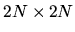

| A Chess Knight |
Presumably everybody knows how a knight can move on a chessboard. One may agree that its movements are quite monotonous, so to make them more entertaining let's define a so called ``dynamic knight". A dynamic knight can perform many different movements that may belong to three types:
The picture below shows all possible movements of a knight divided into three types K, B and T. Obviously our knight, like the ``regular" one cannot move outside the chessboard.
For a dynamic knight it is not relevant whether the fields between the starting field and ending one are occupied or not (again like for the ``regular knight"). It only matters whether the ending field is empty. Then the movement can be performed. There has to be a restriction among so many capabilities of a dynamic knight. It cannot perform the same sort of movements consecutively (just not to fall into routine).
Having redefined a chess knight, why not to redefine a chessboard? Our
chessboard will be a square of size
.
N can be any integer number from
the range of 3..20. There can be several obstacles of any shape on a
chessboard so a knight cannot stop on these defected fields.
Your task is to write a program which can calculate the minimal number of
movements to get the knight from one given field to another one. It may be
assumed that the first movement can be of any type.
Input's end is shown as a line defining chessboard's size as 0.
3 1 1 1 1 2 2 0 0 10 1 1 20 20 20 1 1 20 3 1 3 2 3 3 2 3 1 3 0 0 10 2 1 18 12 2 2 5 6 7 2 8 3 9 4 1 15 7 12 8 13 9 11 11 9 12 4 11 3 9 5 2 7 3 8 6 5 0 0 3 1 1 5 4 2 2 2 4 2 5 3 1 3 2 3 3 3 6 4 2 4 3 4 5 5 1 5 3 5 5 6 1 6 4 6 5 6 6 0 0 0
Result : 0 Solution doesn't exist Result : 6 Result : 4